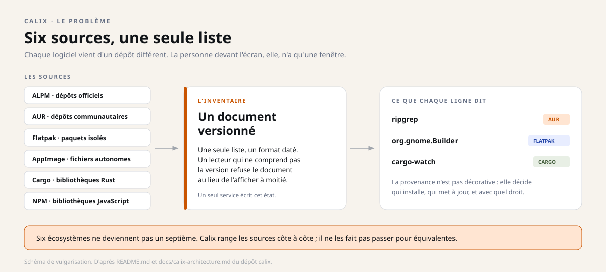
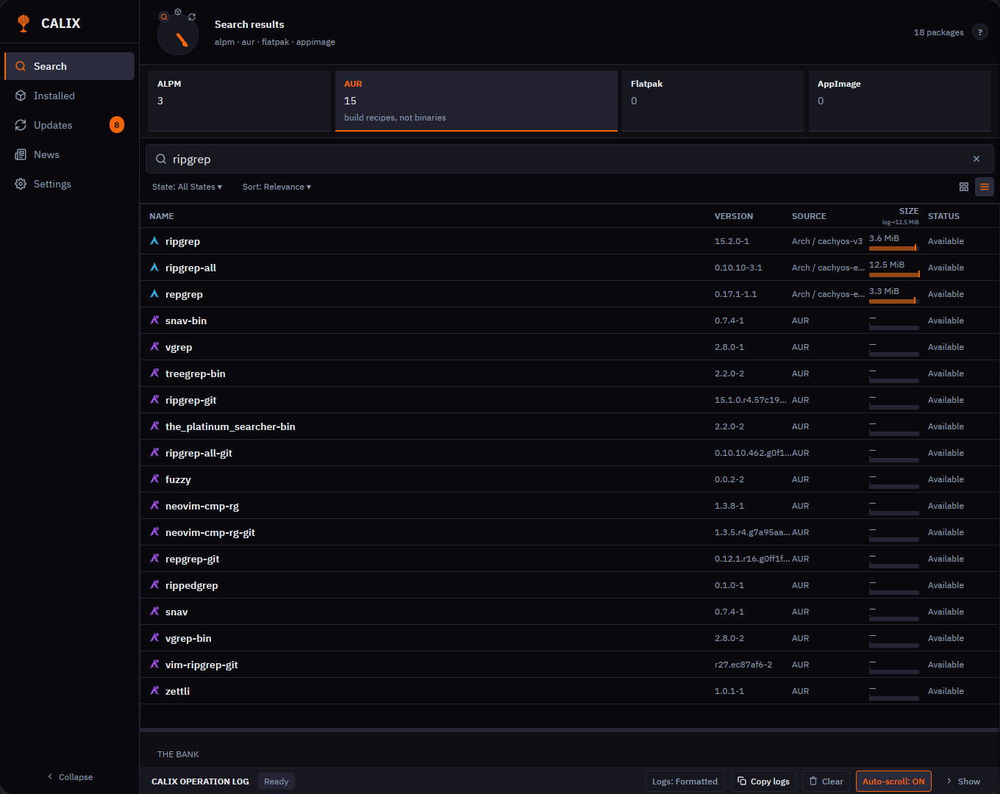
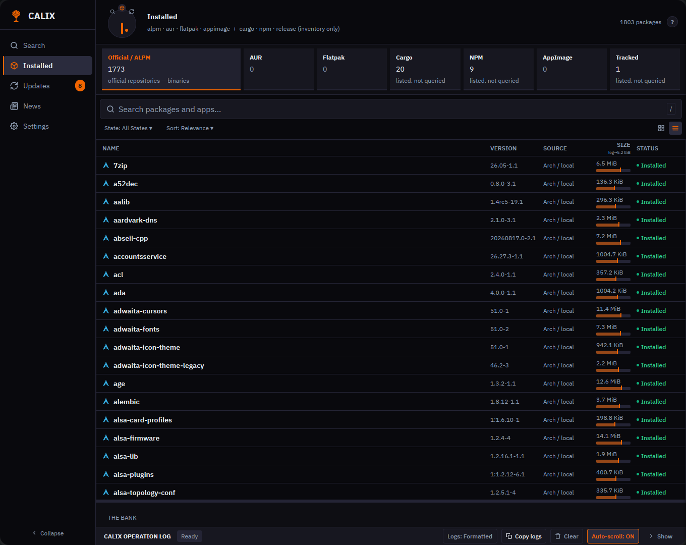
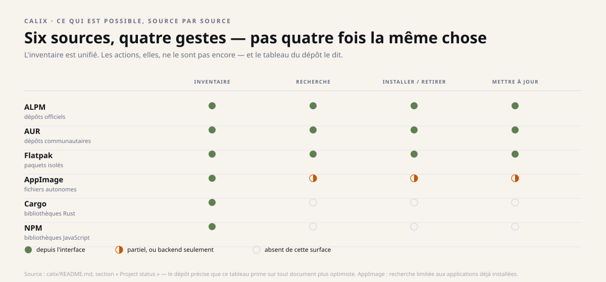
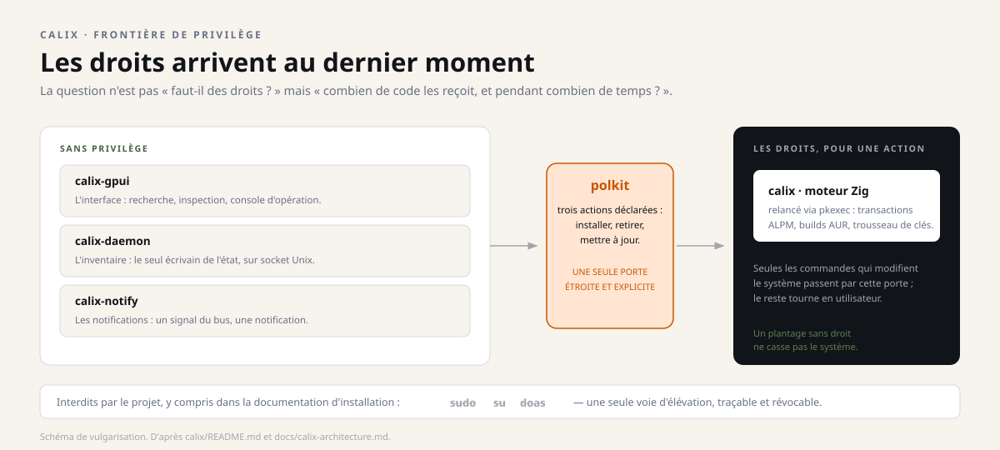

Instantané du 29 octobre 2026. Ce dossier décrit les quatre dépôts tels qu'ils étaient ce jour-là ; les projets ont continué d'avancer depuis, et les dépôts font foi. Les liens soulignés mènent aux sources, figées à leur état de ce jour.
Dossier 3 · le compagnon
Calix
Une seule fenêtre pour installer, mettre à jour et inventorier les logiciels d'un Arch Linux — sans jamais cacher d'où vient chaque paquet.
Pre-1.0 v0.3.1 Licence GPL-3.0 Arch Linux x86_64
sudo : l'élévation passe par un seul chemin polkitEn une image
Imaginez un guichet unique qui accepte les colis de six transporteurs différents. Vous n'avez plus qu'un seul comptoir, un seul suivi, une seule file d'attente.
Mais chaque colis garde son étiquette d'origine : untel vient de la poste, untel d'un coursier privé. Le guichet ne prétend pas que tous les transporteurs sont identiques — il vous évite seulement de courir après six comptoirs.
Le problème, puis la réponse

Sur Arch Linux, installer un logiciel veut dire passer d'un outil à l'autre : pacman pour les dépôts officiels, un assistant pour l'AUR, flatpak pour les paquets isolés, et « ce qui traîne » pour les AppImages. Chacun a sa sortie, sa propre idée de ce qui est installé, et son propre chemin vers les droits d'administrateur.
Calix réunit tout cela dans une seule application native : pas de page web embarquée, pas de navigateur caché. L'interface est écrite en Rust avec GPUI — le même socle que gnosix — et la gestion des paquets en Zig.


Deux vues réelles de Calix. La première, une recherche, mêle dépôts Arch et AUR : chaque ligne garde sa source, et l'AUR est signalé comme « recettes à compiler, pas des binaires ». La seconde montre l'inventaire des 1 803 paquets de la machine de l'auteur, onglet par écosystème ; Cargo et NPM sont « listés, non interrogés ». Captures du 29 octobre 2026, version installée r5022.
Ce qui marche, ce qui reste ouvert
| Domaine | État publié par le dépôt | Ce que cela ne dit pas |
|---|---|---|
| Interface | Interface principale, en développement actif | Pas un design figé ; la mise en page peut encore changer. |
| Inventaire unifié | ALPM, AUR, Flatpak, AppImage, Cargo, NPM et versions suivies | Inventorier n'est pas savoir installer : voir la ligne suivante. |
| Actions depuis l'interface | ALPM, AUR et Flatpak seulement | Cargo et NPM sont listés, pas encore modifiables depuis l'interface. |
| Recherche | ALPM, AUR, Flatpak et AppImages déjà installées | Les autres sources restent en inventaire seul. |
| Service d'inventaire | Répond à la demande, seul écrivain de l'état | Pas encore d'ordonnanceur : rien ne se met à jour tout seul. |
| Suivi des versions | Registre et contrôles de provenance en Zig | Un moteur Python gelé écrit encore le fichier d'observation. |
| Notifications | Livrées et vérifiées sur une session réelle | Installées, mais pas activées par défaut. |
| Plateforme | Arch Linux, x86_64 | Aucune autre distribution n'est prise en charge. |

Le dépôt publie un tableau d'état et précise que, si un autre document de l'arbre le contredit de façon plus optimiste, c'est ce tableau qu'il faut croire. C'est une discipline rare, et c'est ce qui rend la lecture utile.
La frontière de privilège
C'est le point le plus intéressant pour qui finance ou évalue le projet. Un gestionnaire de paquets a besoin des droits d'administrateur : il modifie le système. La question n'est pas « faut-il ces droits ? » mais « combien de code les reçoit ? ».
Chez Calix, l'interface, le service d'inventaire et le pont de notifications tournent sans privilège. L'élévation passe par un seul chemin étroit, explicite, via polkit. Le projet interdit explicitement sudo, su et doas — y compris dans sa documentation d'installation.

pkexec, pour l'une des trois actions polkit déclarées : installer, retirer, mettre à jour.Un programme qui plante sans privilège ne casse pas le système. Un programme qui demande les droits au dernier moment, pour une opération précise, réduit la surface d'un incident. C'est une décision d'architecture, pas une précaution décorative.
Pourquoi la provenance est le vrai sujet
Le fil rouge de ces quatre dépôts, c'est la topologie : rendre explicite où se trouve chaque chose, et ce que cette position autorise. Calix en donne une version très concrète.
Un logiciel installé depuis les dépôts officiels et le même nom venu de l'AUR ne sont pas le même objet. L'un est signé par la distribution, l'autre par un mainteneur communautaire. Les confondre dans une liste sans étiquette serait une faute, pas une simplification. Calix garde donc l'étiquette, et va jusqu'à versionner le format du document : un consommateur qui ne connaît pas la version refuse de lire.
Une étiquette de colis ne dit pas si le contenu est bon. Elle dit qui l'a envoyé, et donc à qui vous aurez affaire si quelque chose ne va pas. C'est exactement ce que fait Calix avec un paquet.
Ce que ce n'est pas
- Pas fini. Le projet est explicitement pre-1.0 ; la version 0.3.1 est une étape, pas un aboutissement.
- Pas universel. Arch Linux et x86_64 uniquement. Ce n'est pas un gestionnaire de paquets pour Debian, Fedora ou macOS.
- Pas encore automatique. Le service répond à la demande : il n'y a pas d'ordonnanceur, donc pas de mise à jour de fond.
- Pas tout modifiable. Cargo et NPM apparaissent dans l'inventaire mais ne s'installent pas encore depuis l'interface.
- Pas entièrement natif. Un moteur Python gelé écrit encore le fichier des versions suivies ; le remplacer fait partie des chantiers annoncés.
- Pas requalifié sur les gestes. La requalification de la navigation reste ouverte : les clics n'ont pas pu être exercés par le pointeur synthétique.
Ce que ça change, selon qui vous êtes
Utilisateur d'Arch Linux
Une seule fenêtre au lieu de quatre outils, et une liste qui ne vous ment pas sur l'origine d'un paquet. Les mises à jour restent manuelles pour l'instant.
Développeur
Un exemple complet d'interface GPUI native, un backend Zig qui parle à libalpm, un protocole JSON-lines versionné sur socket Unix, et une frontière polkit écrite noir sur blanc.
Décideur ou financeur
La valeur n'est pas « un magasin d'applications de plus » : c'est un modèle de provenance et de privilège, réutilisable partout où plusieurs sources doivent cohabiter sans se confondre.
Pour aller plus loin
Technique — les mots du dépôt
ALPM : la bibliothèque derrière pacman, le gestionnaire de paquets d'Arch. AUR : les dépôts communautaires d'Arch, où les paquets sont des recettes compilées localement. Flatpak : des applications empaquetées avec leurs dépendances, isolées du système. AppImage : un fichier exécutable autonome. polkit : le mécanisme qui demande l'autorisation à l'utilisateur, au moment de l'action, pour une opération précise.
Langages : Rust et GPUI pour l'interface ; Zig 0.16 pour le moteur, le service et les notifications. Licence : GPL-3.0-only — une licence qui impose de partager les modifications si le programme est distribué.
Vérifier par soi-même
Chaque version publiée fournit une archive et son empreinte SHA-256 : on télécharge les deux, on vérifie l'empreinte, puis on regarde le contenu. L'archive n'est pas un installeur, c'est une arborescence à inspecter.
Depuis les sources, il faut Zig 0.16 et une chaîne Rust stable : make zig construit les trois binaires, make run lance l'interface contre le backend du dépôt. L'installation du paquet passe par pkexec pacman -U, jamais par sudo.